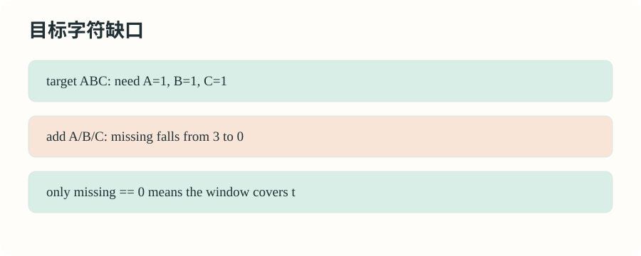
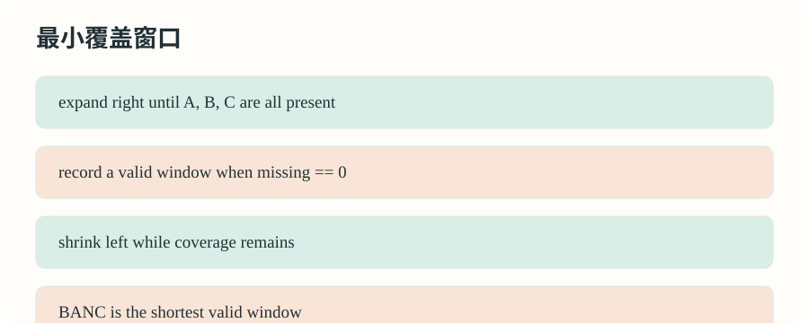
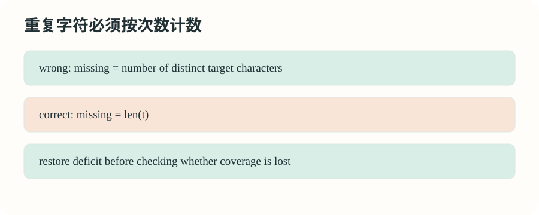

LEETCODE 76 / HARD / SLIDING WINDOW
最小覆盖子串
Minimum Window Substring · 给定字符串 s 和目标字符串 t，返回 s 中最短的连续子串，使它包含 t 中每个字符及其重复次数。s=ADOBECODEBANC、t=ABC，答案为 BANC。若目标需要两个 a 而窗口只有一个 a，则不能覆盖。
01 · 为什么不能只比较字符集合
目标 t 是一个多重集合，不只是字符种类集合。若 t= AABC，窗口必须至少包含两个 A、一个 B 和一个 C。朴素枚举所有子串并重复计数很慢；我们用 need[c] 表示当前窗口相对目标还缺多少个字符 c。
02 · 状态与不变量
初始化 need=Counter(t)，missing=len(t)。加入字符 c 时，如果 need[c] 原本大于 0，说明它填补了一个真实缺口，missing 减一；随后 need[c] 减一。窗口收缩时先恢复 need[c]，若变为正数，说明重新缺少该字符，missing 加一。missing==0 当且仅当窗口覆盖 t 的全部字符及重复次数。

03 · 关键步骤交互

步骤 1 / 5
初始化
t=ABC，need[A]=1、need[B]=1、need[C]=1，missing=3。
missing 表示尚缺的字符总数，重复字符分别计数。
当前第 1 步
04 · 正确性证明
初始化时每个目标字符的 deficit 等于其需求量，因此 missing 等于目标总长度。加入字符时，仅当该字符原本仍有正缺口才减少 missing；收缩时恢复该字符需求，若缺口变正则增加 missing。由归纳可知 missing 始终等于窗口尚缺字符总数，所以 missing==0 与覆盖条件等价。每个右端点最多加入一次、每个左端点最多移除一次；每次覆盖时尽可能收缩并更新最短答案，因此最终得到全局最短覆盖子串。
05 · Python 实现
from collections import Counter
class Solution:
def minWindow(self, s: str, t: str) -> str:
if not s or not t or len(t) > len(s):
return ""
need = Counter(t)
missing = len(t)
left = 0
best_left, best_len = 0, len(s) + 1
for right, char in enumerate(s):
if need[char] > 0:
missing -= 1
need[char] -= 1
while missing == 0:
window_len = right - left + 1
if window_len < best_len:
best_left, best_len = left, window_len
outgoing = s[left]
need[outgoing] += 1
if need[outgoing] > 0:
missing += 1
left += 1
return "" if best_len > len(s) else s[best_left:best_left + best_len]设 m=|s|、n=|t|。Counter 初始化 O(n)，左右指针各移动至多 m 次，哈希更新期望 O(1)，总期望时间 O(m+n)。辅助空间 O(Σt)，输出切片空间另计。
06 · 易错点
missing 初始化必须是 len(t)，不能只数不同字符种类；否则目标中的重复字符被忽略。加入字符时要先判断 need[c] 是否大于零，再减一。移除字符时先加回 need，再判断是否变成正数。没有覆盖窗口时返回空串；题目大小写敏感。
